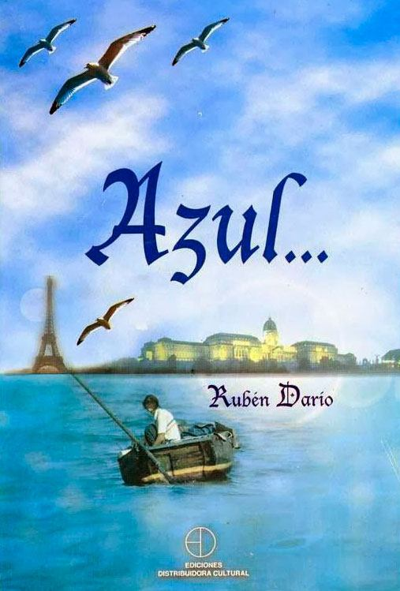
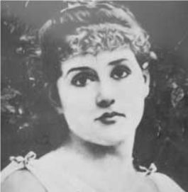
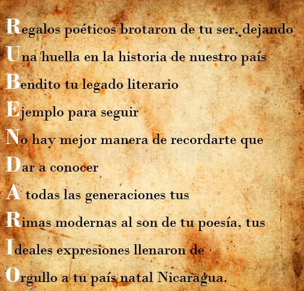
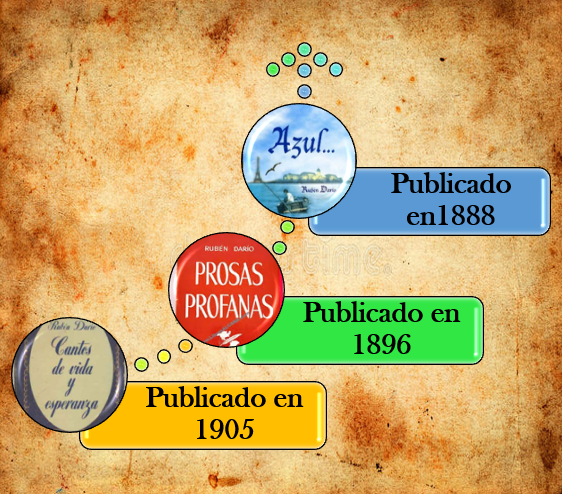

Biography
Félix Rubén García Sarmiento, as he was baptized, was a poet, journalist, Nicaraguan diplomat and maximum
representative of literary modernism in the Spanish language, who was born on January 18, 1867, in the
small town of Metapa, now known as Ciudad Darío in his honor, located in the department of Matagalpa in the
North of the country.

It is said that the "Darío" adopted him because it was the name of his great-great-grandfather, whose sons
and daughters were known as los and las Dario. The name became so popular that his paternal
great-grandmother used it as his surname, as did his great-grandson, Rubén's father: Manuel Darío.

From a very young age he went to live with his aunt in the city of León, and very soon showed his genius,
since he learned to read at age three, having famous literary works as favorite readings, considered very
complex for his age (The Thousand and One Nights, Don Quixote of La Mancha, and even The Bible). In
addition he wrote numerous verses for regional celebrations, and before his 13 years, some were published
in a newspaper of the city of Rivas called "The Thermometer". Since then, he began to be known as "the
child poet" throughout Nicaragua, and little by little in the rest of the countries of the Central American
region. At age 14 he was invited to participate in the writing of a newspaper called "La Verdad", which was
opposed to the government of the time.
Due to all the recognition achieved as "child poet", some liberal members of the National Congress
submitted a scholarship to their president to send him to study in Europe, but when at a party held at the
Presidential Palace Rubén was invited to declaim his verses , was rejected by President Pedro Joaquín
Chamorro, who said: "My son, if you write now against the religion of your parents and your country, what
will it be if you go to Europe to learn worse things?". Instead of Europe, he was proposed to study in the
city of Granada, but Rubén ended up rejecting the offer so as not to offend his adopted town, León, due to
the old political rivalry between both cities. Thus, Rubén decided to continue studying at the Instituto
Leonés de Occidente.
In his trips to Managua, and being protected by members of Congress belonging to the Liberal party, he met
great intellectuals who helped him get a job at the National Library, which opened the doors to learn more
about Spanish literature . And so he stayed in Managua collaborating with his journalistic work in the
newspapers "El Ferrocarril" and "El Porvenir". In this notion to Rosario Emelina Murillo, with whom she was
fond several years later. In 1882, when she was 15 years old, she was introduced to the then president of
El Salvador, Rafael Zaldívar, who welcomed him into his country thanks to his evident talent and potential,
and where, although for a short time, he enjoyed a lot of fame and celebrity. However, he lost government
support, suffered from smallpox and finally returned to Nicaragua to settle in Managua, where he began
working in the presidential secretariat. He also resumed his relationship with Rosario Emelina Murillo, who
in one of his poems called "heron brunette", and which caused a disappointment that led him to leave the
country.
In 1896, at age 19, he left for Chile, and with the help of some friends and the Salvadoran poet and
general Juan Cañas, he settled in Valparaíso, where thanks to his letters of recommendation he received the
protection and help of the writer Eduardo Poirier. He managed for the time that the local newspaper "El
Mercurio" published a paper on the death of Chilean historian and politician Benjamin Vicuna Mackenna, who
had written as soon as he disembarked in Valparaiso. Some time later, thanks to the influence of Poirier,
he moved to the city of Santiago, where he joined the newspaper "La Época", which gave way to his
incorporation into the young intellectuals of that city. However, although among the aristocracy he had to
endure humiliations and contempt due to his lack of refinement, he became very close to the son of the then
president of the republic, Pedro Balmaceda Toro, who introduced him to French literature and gave him his
full support from the moment he met him. In 1887, thanks to him and Manuel Rodríguez Mendoza, Rubén was
able to publish his book "Abrojos" for the first time.
Until before that, Rubén Darío had already tried twice to publish some books that did not see the light at
the moment when he expected it. In the case of the first, his publication had to wait 50 years after his
death.
In 1888, with the help of his protectors, he published the first edition of his great work entitled "Azul",
which became the starting point for the change in Castilian literature of the time. Rubén Darío had never
been to Europe, but his book reached the old world, until the hands of the Spanish literary critic Juan
Valera, who published in the Madrid newspaper "El Imparcial" some letters addressed to the poet, in which
he recognizes him as "an Prosista and a poet of talent ". This recognition contributed greatly to the fame
of the Nicaraguan poet, since they were also published in the Chilean press and in other Latin American
countries.
By then I was working for influences of the poet Eduardo de la Barra, as editor in "El Heraldo", a
commercial and political newspaper of Valparaíso, from which he was fired for being over-qualified to write
in it. When he was left without a job and given to a life of parties and "Bohemian inquiry", as he himself
says in his autobiography, came times of scarcity that made him contemplate a possible return to his land.
However, before embarking for Nicaragua, in 1889 he met who would become a great friend and protector: José
Victoriano Lastarria, Chilean writer and politician who together with General Miter, Argentine poet and
military, helped him get a new job, at the same time that he achieved one of his greatest wishes: to be a
correspondent for the newspaper with the greatest circulation at the time: "La Nación" de Bueno Aires.
Shortly after he returned to Nicaragua, where he was received in León with great joy and admiration,
although he only stayed a short time, because he left for El Salvador, where he was appointed director of
the newspaper "La Union", whose name referred to the unification of the Central American countries, cause
of which the then Salvadoran president, General Francisco Menéndez, was an active promoter. In this work he
met many characters of politics and literature of the time, without leaving behind his work as a
correspondent of the Argentine newspaper.
On June 22, 1890, he married Rafaela Contreras, daughter of the famous Honduran speaker Álvaro Contreras.
The day after his wedding there was a coup d'etat against the then Salvadoran president, who was led by
General Carlos Basilio Ezeta, who had been one of the guests at his wedding ceremony. After the events,
Darío left alone for Guatemala, where after a talk with President Manuel Lisandro Barillas, published in
the newspaper "El Imparcial" an article with the title of "Black History", in which he condemned the
betrayal happened. This article was also published in "La Nación".
In 1890, by presidential order he was entrusted with the management and ownership of the newspaper "The
Post Office", which six months later ceased publication after losing the government's financial support.
However, his work there helped him to meet people and make good contacts; and finished his work he went
with his wife to Costa Rica, where besides working in several newspapers, on November 21, 1891, his first
son was born: Rubén Darío Contreras. By then, he and his family were going through an uncertain economic
stage, so he decided to return to Guatemala to look for alternatives, leaving his wife and son behind.

In 1892, being a national figure, the government of Nicaragua sent him to Spain to attend the celebration
of the Fourth Centenary of the discovery of America. During his trip by boat he stopped in Havana, Cuba,
where he met famous writers of the time such as Julian del Casal, Aniceto Valdivia and Raoul Cay. Later, he
continued his trip to Spain, and once there he settled in Madrid, where he had the opportunity to socialize
with renowned poets, novelists, scholars and politicians. In November of that same year he returned to
Nicaragua. On his trip, he made a brief stop for Colombia, where with the help of Rafael Núñez he had the
opportunity to contact Miguel Antonio Caro, then president, to see the possibilities of occupying the
position of consul in Spain, knowing that in Nicaragua he was not going to have many more opportunities.
Being in his country, as expected, he did not find great government support and also received a painful
news: a telegram from San Salvador in which he announced the seriousness of his wife, and shortly after,
the confirmation of his death , in January 1893. The poet could not go to El Salvador, due to grudges with
General Ezeta, and thus his son was left in the hands of his sister-in-law and her husband, who took care
of their education. The whole situation led to alcoholism.
A short time later, Rubén returned to maintain a relationship with Rosario Emelina Murillo, whose family
forced him to marry. In April of that year, he traveled to Panama, where he received the news that the
Colombian president, Miguel Antonio Caro, had appointed him honorary consul in Buenos Aires. This, along
with his work as a correspondent for "La Nación", allowed him to travel around the world: in New York he
met the Cuban poet José Martí, and in Paris he suffered the disenchantment of the city he longed to know
and admired. authors: Verlaine and Moreas, for showing little interest in the poet.
In 1894 he returned to America, to reside for a time in Buenos Aires, from where along with the native
Leopoldo Lugones and the Bolivian Ricardo Jaimes Freyre, he led the Modernist Movement. In the newspaper he
published articles on the writers he had known and read, and had considered rare. His work "Los Raros" is
inspired by them.
In Buenos Aires, while his wife was in Panama, Ruben led a festive life, because his work was "honorary"
and demanded little. In October 1895, after the death of Rafael Núñez, the Colombian government suspended
his consulate in this city, but his friends offered him the opportunity to collaborate with the newspapers
"La Tribuna", "La Prensa" and "El Tiempo", while his work as a correspondent for "La Nación" continued to
be his main source of income. However, it was not enough, and the now famous poet got a job as personal
secretary of Carlos Carlés, director of "Correos y Telégrafos". Nevertheless, he continued to produce
works, and in 1896, with the financial contribution of the owner of the newspaper "El Tiempo", Carlos Vega
Belgrano, published "Prosas Profanas", one of the greatest works of literary Modernism, for using syntactic
elements without formal links , enrich the vocabulary with French loans and use of neologisms, Anglicisms,
archaisms and other innovative resources.
On several occasions, Rubén asked the government of Nicaragua to send him to Europe with a diplomatic
position, but he only managed the trip until 1898, when the newspaper "La Nación" sent him as a
correspondent in Madrid, Spain, to report on the situation that had occurred. between that country and the
United States.
He returned to Europe on December 3, 1898. Where in Madrid, shortly after, in 1899, met in Casa de Campo
Francisca Sanchez, an illiterate peasant, who was a great inspiration for the poet, in addition to becoming
the companion of his last years of life. There, he also achieved a lot of acceptance among the young people
who defended the Modernist Movement, being able to inculcate intellectual freedom and artistic personalism.
Among these were Juan Ramón Jiménez, Ramón María del Valle-Inclán and Jacinto Benavente.
Thanks to his work as a correspondent, Darío was able to know and write about events of the time that were
happening in different European countries to which he traveled. In many cases, his impressions were
reflected in some books, such as "Contemporary Spain" and "Pilgrimages".
From 1900 he settled in Paris and achieved some stability. In 1901 he published the second edition of
"Prosas Profanas". That year, still married to Rosario Emelina Murillo, Francisca had a daughter of the
poet, who died of smallpox shortly after giving birth, without the latter coming to know her. In 1903 he
was appointed Nicaraguan consul in that city, which brought him better economic conditions and gave him
more opportunities to travel and continue to meet well-known intellectuals. At that time his second son was
born with Francisca, but he also died at a very young age.
In 1905 he returned to Spain as representative of the Nicaraguan government in a diplomatic delegation, and
there he published his book "Cantos de Vida y Esperanza", probably one of his most acclaimed productions.
In 1907, he returned to Nicaragua to get his divorce from Rosario Murillo, who had repeatedly refused to
give it to him unless the poet paid him financial compensation superior to what he considered just. Ruben
decided to take the case to court, but was unsuccessful. When he wanted to return to Paris he was delayed
due to economic reasons, and after several efforts, during the government of José Santos Zelaya, he was
sent to Madrid as ambassador. Nevertheless, when Zelaya was overthrown, Darío was forced to resign to his
position and returned to Paris to continue writing and publishing.
For this stage of his life, Rubén Darío suffered from the effects of alcoholism, which caused repeated
psychological crises and effects on his physical and mental health; So much so, that in 1910, while in
Havana and under the influence of alcohol, he tried to commit suicide.
In 1912 he toured several countries in Latin America, thanks to his work as director of the magazines
"Mundial" and "Elegancias", by Uruguayan businessmen Alfredo and Rubén Guido. It was at this time that the
poet decided to write his autobiography and also published "History of my books", where you can learn more
about his literary evolution.
After this, in 1913 he left again for Paris, making a stopover in Mallorca, where although he continued to
write, his health was again affected by the effects of alcoholism. In January 1914 he arrived in Paris, but
at the outbreak of World War I decided to return to America to defend pacifism for the American nations,
saying goodbye to Francisca forever.
On his return, he passed through New York and Guatemala, and on January 7, 1916, he arrived in León, his
childhood city, where he died less than a month later, after having undergone surgery. His remains are
preserved in the Cathedral of the city of León, Nicaragua.
Currently, Rubén Darío is one of the most celebrated characters in the history of Nicaragua; is the maximum
representative of the literary greatness of the country, and transcended borders earning the title of
"Father of Modernism". His subjects were always inspired by his early feelings. He reached maturity as a
writer to travel the world, to know what he always dreamed and disenchanted with that he always longed for.
His numerous trips, his erotic instinct, his sudden crushes, his freedom of thought, the tragedy of the
death of his first wife, his refuge in alcohol, along with his innate intellect, made him what he
represents today.
Rubén Darío is remembered throughout Nicaragua; Many streets, parks, schools and buildings are named after
this poet, as well as several museums and monuments, which have become part of a perpetual honor to his
life and work.
Acrostic to Rubén Darío

Sweethearts of Rubén Darío
- Rafaela Contreras
- Rosario Emelina murillo
- Francisca Sánchez
Countries to which Rubén Darío has traveled
- Chile
- El Salvador
- Guatemala
- Panama
- Costa Rica
- Cuba
- Spain
- France
- Germany
- Argentina
- Belgium
- Brazil
- United States
- Colombia
Capital works
